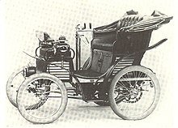
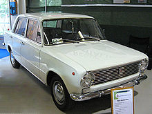
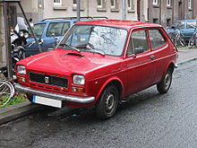

The automotive industry in Italy is a quite large employer in the country, it had over 2,131 firms and employed almost 250,000 people in 2006. Italy's automotive industry is best known for its automobile designs and small city cars, sports and supercars. The automotive industry makes a contribution of 8.5% to Italian GDP. Italy is one of the significant automobile producers both in Europe and around the world.
Today the Italian automotive industry is almost totally dominated by Fiat Group (now called Stellantis); in 2001 over 90% of vehicles were produced by it. As well as its own, predominantly mass market model range, Stellantis owns the mainstream Fiat brand, the upmarket Alfa Romeo and Lancia brands, and the exotic Maserati brand. Italian cars won in the European Car of the Year annual award one of the most times among other countries (including Fiat most that any other manufacturer) and in World Car of the Year award also.
The Italian automotive industry started in the late 1880s, with the Stefanini-Martina regarded as the first manufacturer although Enrico Bernardi had built a petrol fueled tri-cycle in 1884. In 1888 Giovanni Battista Ceirano started building Welleyes bicycles, so named because English names had more sales appeal,[4] and in October 1898 he co-founded Ceirano GB & C with his brothers Matteo, and Ernesto to build the Welleyes motor car. As they encountered challenges of scale and finance they contacted a consortium of local nobility and business-men led by Giovanni Agnelli and in July 1899 Fiat SpA purchased the plant, design and patents – so producing the first F.I.A.T. – the Fiat 4 HP. The Welleyes / F.I.A.T 4 HP had a 679 cc engine and was capable of 35 km/h (22 mph).[5]
